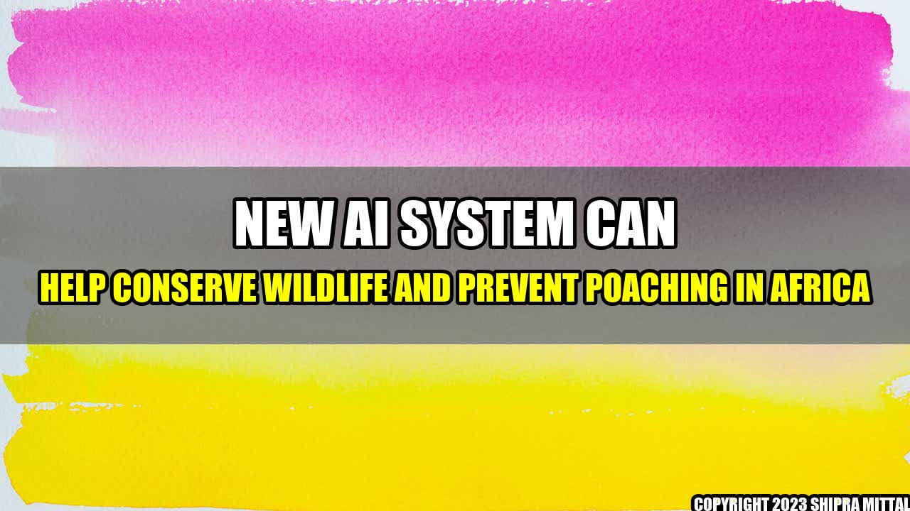

New AI System Can Help Conserve Wildlife and Prevent Poaching in Africa

Africa is known for having a wide variety of wildlife species that are unique and cannot be found anywhere else in the world. From the majestic elephants to the graceful giraffes, the gorillas, lions, rhinos and leopards, Africa's wildlife is a treasure that must be preserved for future generations. However, these animals are constantly under threat from poaching, which is driven by the demand for their body parts in the black market.
The Situation in Africa
According to the World Wildlife Fund (WWF), Africa has lost around 60% of its wildlife in the past 40 years, and the trend seems to be continuing. Elephants, for example, have seen their populations decline by 111,000 in just 10 years, mostly due to poaching. Other animals like rhinos and lions are also facing a similar fate, with their numbers declining rapidly in recent years. The situation is made worse by the fact that poachers are using sophisticated methods to track and kill these animals, making it difficult for conservationists to keep up.
The Role of AI in Wildlife Conservation
However, there is hope for Africa's wildlife, thanks to the use of artificial intelligence (AI) technology. AI systems can help conservationists to monitor, protect and conserve wildlife in ways that were previously impossible or too expensive. For example, AI systems can be used to detect and respond to poaching attempts in real-time, which can save the lives of countless animals. These systems rely on a network of cameras, sensors, and drones that are placed in strategic locations and are connected to a central database. The AI system then analyses the data received from these sources and notifies the authorities if it detects any suspicious activity.
AI can also be used to monitor the movements and behaviour of wildlife in their natural habitats. For instance, researchers can use AI-powered cameras to track the migratory patterns of herds of elephants or study the social interactions of primates. This data can then be used to make informed decisions about conservation and management strategies.
AI in Wildlife Conservation
The use of AI in wildlife conservation has already yielded impressive results in several countries across Africa. For example, in Tanzania, an AI-powered anti-poaching system reduced poaching incidents by 50% in the first year of operation. The system, which was developed by ShadowView, uses a network of cameras and drones to detect and deter poachers. The system's success has led to its adoption in other countries like South Africa and Mozambique.
In Kenya, the Ol Pejeta Conservancy is using AI systems to monitor the movements of the endangered black rhinos. The conservancy has installed a network of cameras and sensors that can detect the presence of rhinos and alert rangers if there is any suspicious activity. This has enabled the conservancy to track the rhinos' movements in real-time and respond quickly to any potential threats.
Conclusion
In conclusion, AI is proving to be a valuable tool in the fight to conserve Africa's wildlife and prevent poaching. The technology is making it possible to monitor and protect wildlife in ways that were previously impossible or too expensive. However, it is important to note that AI is not a panacea for all the challenges facing wildlife conservation in Africa. The conservation efforts must also involve the local communities and governments, who hold the key to long-term sustainable conservation.
- AI can detect and respond to poaching attempts in real-time
- AI can monitor the movements and behaviour of wildlife in their natural habitats
- AI is not a panacea for all the challenges facing wildlife conservation in Africa
Curated by Team Akash.Mittal.Blog
Share on Twitter Share on LinkedIn